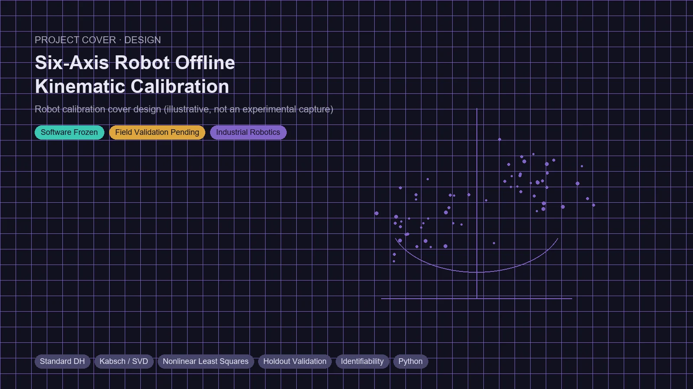
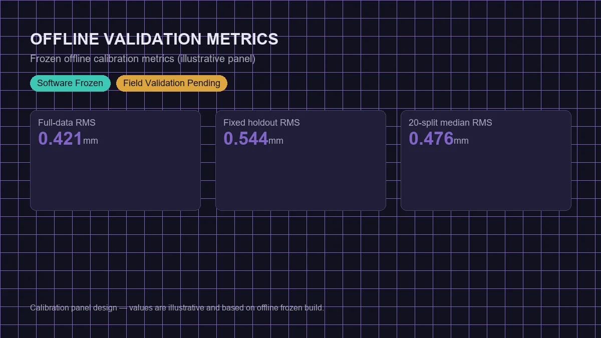
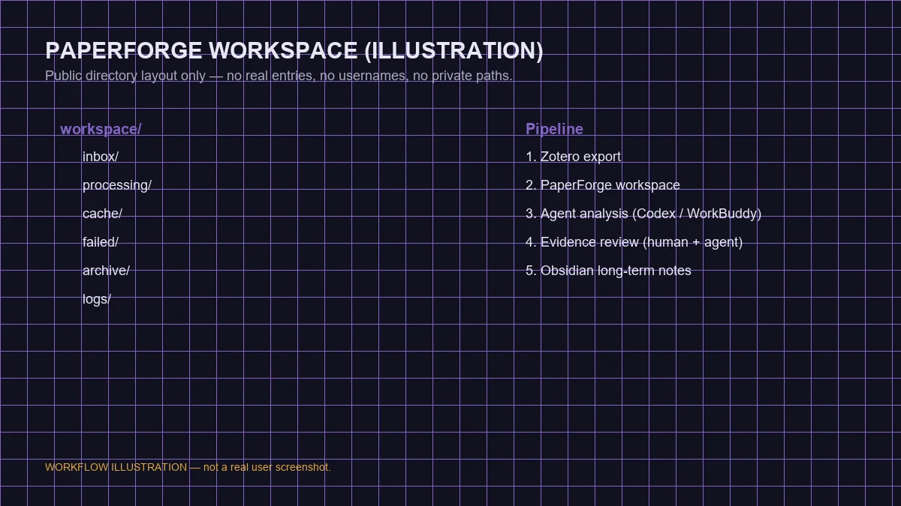
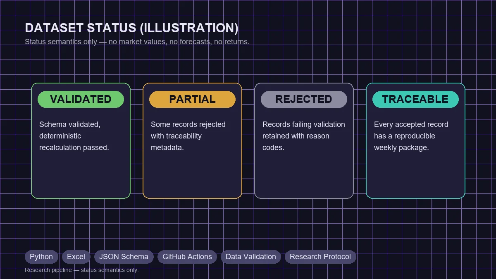
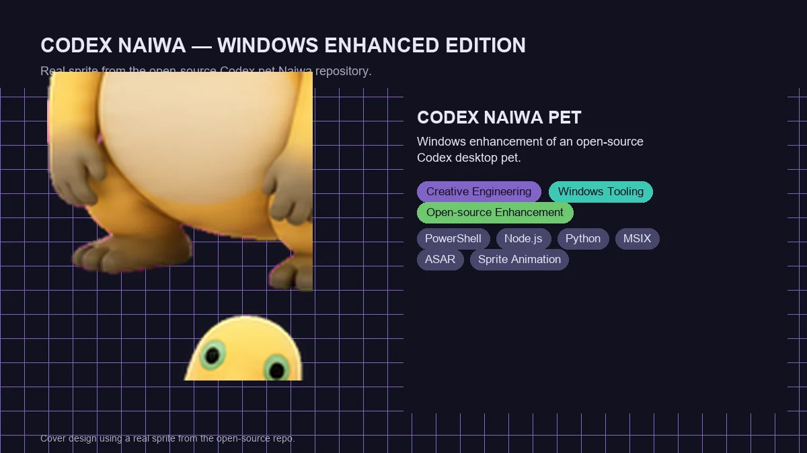

本地优先的论文深度分析与知识工作流
将 Zotero 中的论文与 PDF 组织为可追溯分析工作区，约束 Agent 完成结构化证据审查，并导出到 Obsidian 形成长期知识网络。

从 Excel 记录原型扩展出的多城市天气—市场研究管线，通过结构化周包、Schema、确定性复算、部分入库和拒绝留痕保障数据可追溯、可校验。

基于开源桌宠项目构建的 Windows Codex Desktop 增强版本，增加交互动画、本地音频和拖动效果，并建立包含 dry run、兼容性验证、ASAR 定向补丁和安装验收的交付流程。
我关心的不只是算法能否在理想数据上工作，更关心它在真实设备、测量噪声、跨平台环境和部署约束下是否仍然可靠。
我通过机器人运动学建模、参数辨识和验证流程理解工业机器人的精度来源，并持续学习 TCP、坐标系、伺服运动控制、ROS2 与真实工位集成。
我倾向于把研究任务设计成可追溯、可复算、可审计的工作流，并明确区分内部验证、外部验证、失败记录和仍待确认的结论。
我使用 ChatGPT 参与目标拆解、方案设计和审查，让 Agent 负责仓库与环境执行，并通过 Git、PR、验收标准和确定性测试约束生成结果。
百分比表示当前项目应用能力，不是考试成绩或官方认证。
DH、FK、TCP、坐标系与六轴机器人标定
参数辨识、Kabsch/SVD 与留出验证
机器人开发环境与项目实践
三环控制、前馈与伺服运动控制实训
机器人标定、PaperForge、数据验证与 CLI
分支、Draft PR、审查、CI 与版本冻结
个人主页、VS Code 工具与桌宠补丁
ROS2 与机器人软件开发基础
PaperForge 与天气—市场研究工作流
Schema、拒绝留痕、确定性复算与重复验证
README、协议、报告与验收文档
非线性最小二乘与机器人参数辨识
ChatGPT 控制面与 Agent 执行面的任务分层
约束、验收标准、提交拆分与审查循环
多仓库实现、调试、审查与迭代
报告、文档、PPT、图像与结构化内容工作流